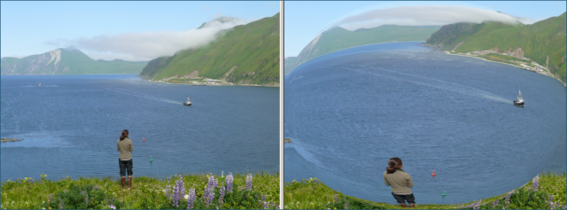

Artistic Effect: Warp
Previous
Top
Next
The Warp effect warps or bends a photo around a conceptual sphere, angled plane, or cylinder. You can select the amount of bending or warping and the type of warp.

Spherical Warp